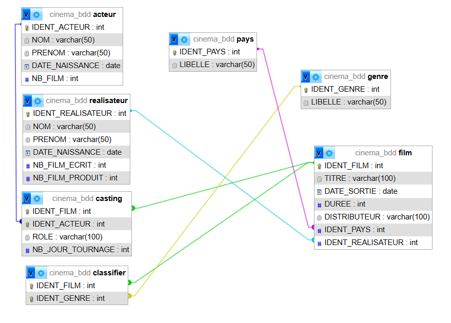
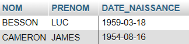
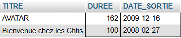

Mission 10 - Création de la Base de Données "Cinéma"
Énoncé du TP
Procédure
1. Contexte de la mission
En tant que stagiaire à la DSI de l'entreprise UGC, j'ai été chargé de concevoir une première ébauche de base de données pour la refonte du site web. L'objectif était de structurer les données des films, acteurs et réalisateurs pour répondre aux besoins précis du service marketing (mise en valeur des films récents, casting, etc.).
2. Conception et Structure de la Base de Données
Analyse et correction de la redondance
Lors de l'analyse du besoin, j'ai identifié une erreur de conception dans la demande initiale : la table FILM contenait deux champs Genre1 et Genre2. Cela créait de la redondance et limitait chaque film à deux genres maximum.
Ma solution : J'ai supprimé ces colonnes de la table FILM et j'ai créé une table indépendante GENRE ainsi qu'une table d'association CLASSIFIER. Cela permet d'associer un nombre illimité de genres à un film sans redondance.
Schéma Relationnel Final
Voici la structure complète de la base de données avec les liens entre les tables (Clés primaires et étrangères) :

Détail de la création d'une table (Exemple : Table FILM)
Pour créer la table FILM, j'ai défini les types de données suivants : VARCHAR pour le titre et le distributeur, DATE pour la sortie, et INT pour la durée. J'ai également défini les clés étrangères pour faire le lien avec les tables PAYS et REALISATEUR.
Code SQL utilisé :
CREATE TABLE FILM (
IDENT_FILM INT AUTO_INCREMENT PRIMARY KEY,
TITRE VARCHAR(100),
DATE_SORTIE DATE,
DUREE INT,
IDENT_PAYS INT,
IDENT_REALISATEUR INT,
FOREIGN KEY (IDENT_PAYS) REFERENCES PAYS(IDENT_PAYS),
FOREIGN KEY (IDENT_REALISATEUR) REFERENCES REALISATEUR(IDENT_REALISATEUR)
);3. Insertion des données
J'ai inséré les données en respectant l'ordre logique pour satisfaire les contraintes d'intégrité (d'abord les tables de référence comme PAYS ou REALISATEUR, puis les tables liées comme FILM).
Exemple d'insertion (Table ACTEUR) :
INSERT INTO ACTEUR (NOM, PRENOM, DATE_NAISSANCE, NB_FILM)
VALUES ('DURIS', 'Romain', '1974-05-28', 60);4. Interrogation de la Base de Données
Pour vérifier le bon fonctionnement de la base, j'ai réalisé plusieurs recherches.
A. Recherches via l'interface graphique (QBE)
Liste des films du genre "SF" :

Réalisateurs nés dans les années 50 :

B. Recherches via le langage SQL (Bonus)
Films de plus de 90mn sortis entre 2008 et 2012 :
Requête : SELECT TITRE... WHERE DUREE > 90 AND DATE_SORTIE BETWEEN '2008-01-01' AND '2012-12-31'

Ajout d'un nouveau film :
J'ai ajouté le film "Bienvenue chez les Ch'tis" en créant d'abord le réalisateur Dany Boon, puis en liant le film au genre "Comédie".